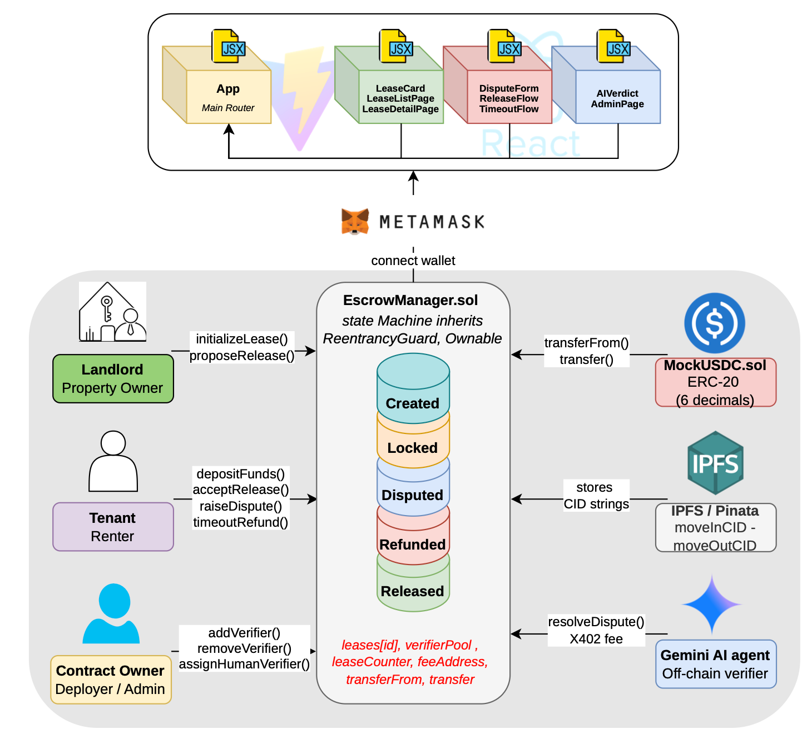
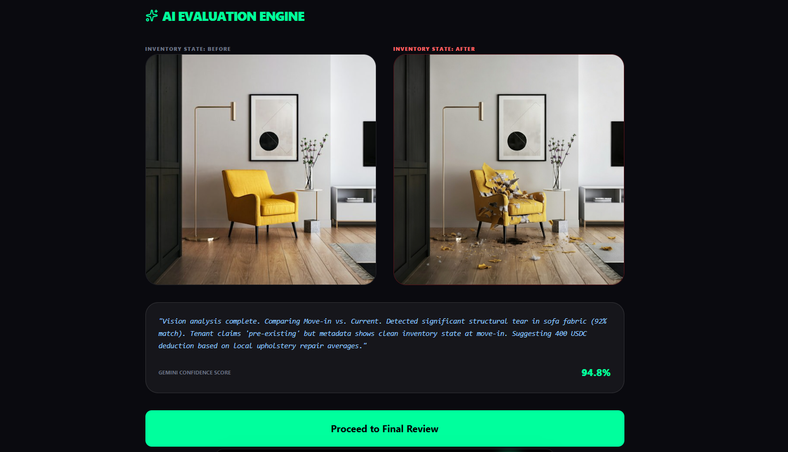

Custody Risk
Funds held by one side can create distrust even when both parties behave reasonably.
Sanitized Portfolio Report
A public-safe case study of a decentralized rental deposit workflow with escrow states, verifier escalation, and frontend-contract integration.
This page paraphrases the original project report for portfolio use. It omits personal names, academic identifiers, wallet screenshots, private account details, raw submission pages, and any metadata that is not necessary to understand the product and engineering design.
RentLock explored how a smart-contract escrow workflow could reduce rental deposit disputes. Instead of one party holding the deposit off-chain, funds are locked in a transparent contract with predefined settlement paths. The prototype focused on lease lifecycle design, tokenized deposits, mutual agreement, dispute escalation, and a verifier mechanism for unresolved cases.
The project is strongest as a systems-design artifact. It shows how product incentives, contract state, frontend UX, and abuse prevention need to be designed together. A smart contract alone is not enough; the surrounding workflow determines whether users can safely understand and act on the contract's rules.
This project is framed as a full-stack Web3 product design case study: smart-contract state design, frontend-contract integration, evidence handling, and incentive-aware dispute resolution.
Rental deposits create an imbalance when one party controls the funds while the other party has limited visibility into settlement rules. Common pain points include unclear deductions, slow refund timelines, poor evidence handling, and a lack of neutral escalation.
Funds held by one side can create distrust even when both parties behave reasonably.
Deposits are difficult to resolve when refund conditions, evidence, and timelines are not explicit.
A dispute mechanism needs incentives, evidence rules, and protection against frivolous claims.
The source report described a simple lease sequence involving the tenant, landlord, frontend, and escrow contract. The recreated portfolio diagram keeps the workflow but omits private wallet screenshots, account identifiers, and raw demo artifacts.
No-Dispute Lease Lifecycle
These selected visuals are more intuitive than a text-only writeup because they show the smart-contract workflow and product surface. I cropped the AI-evaluation screenshot to remove the wallet/account header before publishing it.


The prototype uses a test token to simulate stable-value deposit handling. This allows contract logic to be tested without relying on real funds or exposing private wallet activity in the public writeup.
The escrow contract manages lease creation, deposit funding, state transitions, refund requests, deductions, settlement, and dispute escalation. The contract state gives both parties a shared view of what actions are currently valid.
The product separates tenant, landlord, and verifier actions. Each role has a different interface and different permissions, which reduces accidental misuse and makes the workflow easier to explain.
Evidence such as images or supporting documents should not be stored directly on-chain. A safer pattern is to store evidence off-chain and anchor hashes or references, with encryption and retention policies as future work.
If the parties cannot settle, a verifier flow can review the dispute and trigger the appropriate outcome. This mechanism requires careful incentive design so reviewers are compensated without encouraging low-quality participation.
The design challenge was to decide what belongs on-chain, what should stay off-chain, and where human or verifier judgment is required. The strongest version of the product uses blockchain for settlement integrity, not as a dumping ground for private evidence.
| Decision Area | Option Considered | Selected Approach | Reasoning |
|---|---|---|---|
| Deposit custody | Landlord-held off-chain deposit | Escrow contract with explicit release paths | Improves transparency and gives both parties the same settlement rules. |
| Evidence storage | Store photos or documents on-chain | Off-chain evidence with references or hashes | Avoids exposing sensitive tenancy data while preserving an audit trail. |
| Dispute resolution | Force bilateral agreement only | Escalation path with verifier review | Prevents deadlock when parties disagree about deductions or damage evidence. |
| Reputation | Public dispute history | Selective disclosure as future direction | Supports trust without publishing private settlement histories. |
Dispute flows should discourage frivolous claims through deposits, review fees, or reputation mechanisms.
Inspection photos and tenancy documents can expose private information, so storage design matters.
Users need clear explanations of what the contract can and cannot guarantee before they commit.
The RentLock source report did not include a formal academic bibliography. For the portfolio, the safest presentation is therefore to include technical notes derived from the report and avoid inventing a research-paper citation list that was not actually in the submitted material.
RentLock demonstrates smart-contract product thinking rather than narrow token experimentation. The project covers workflow modelling, escrow states, incentive design, frontend integration, and practical privacy boundaries for public communication.